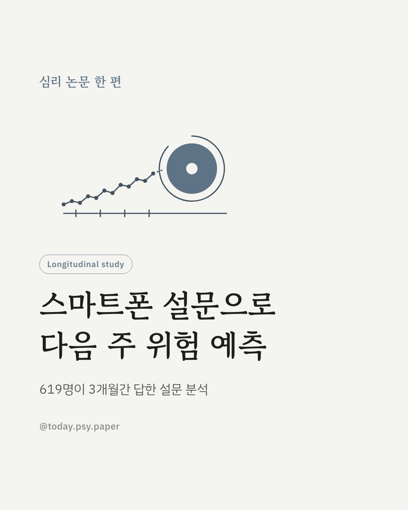
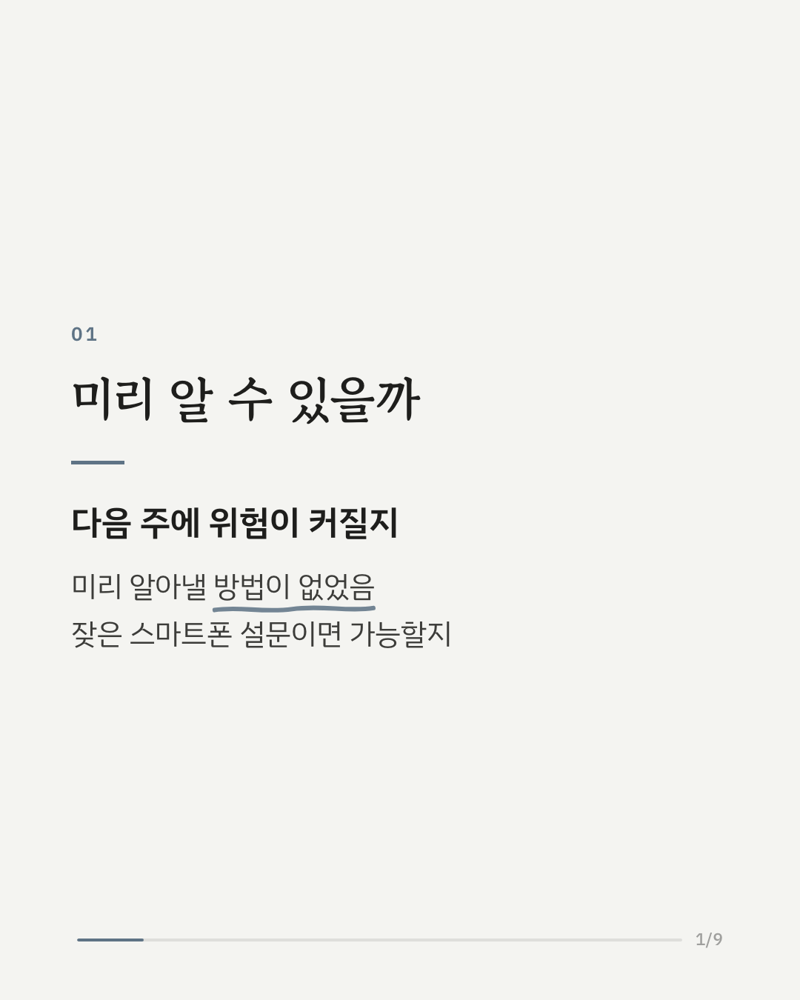
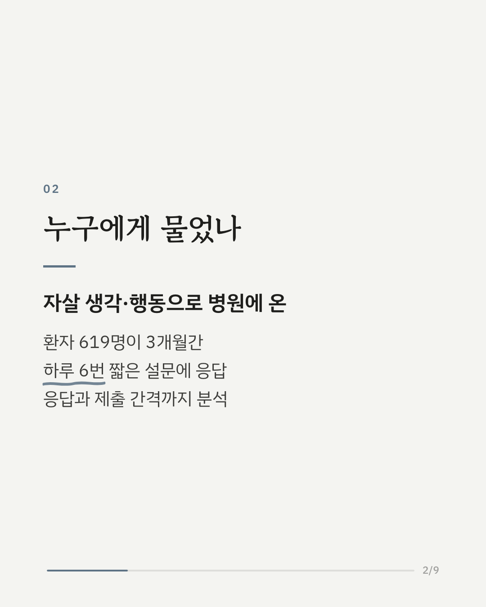
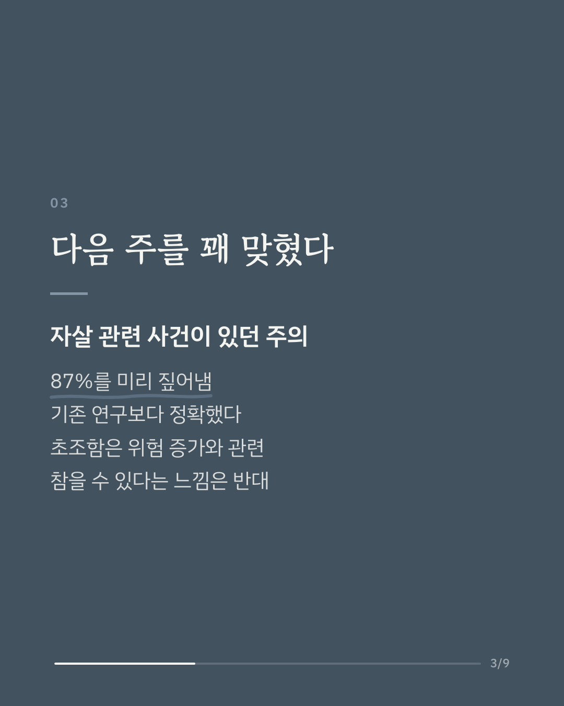
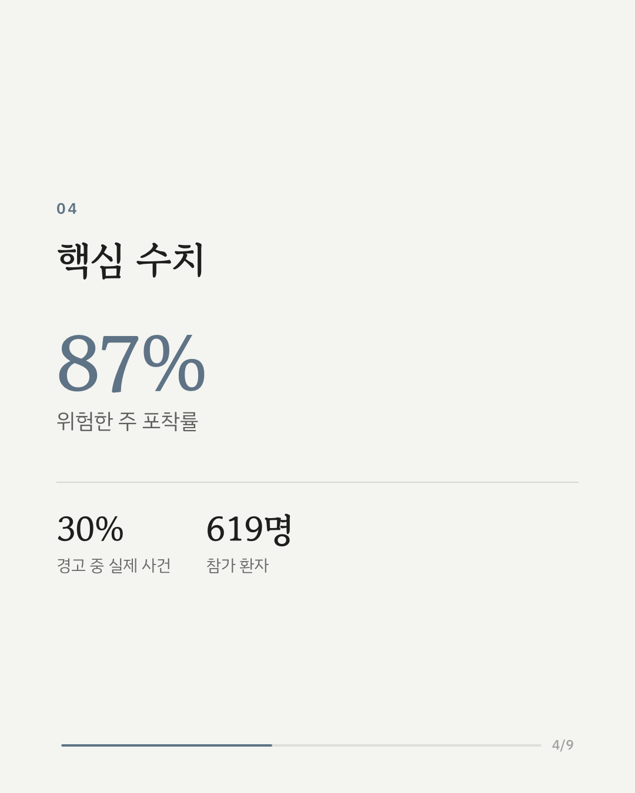
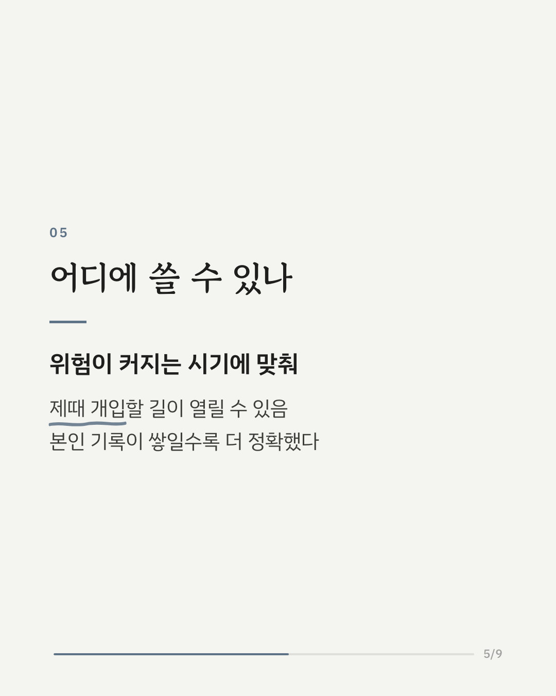
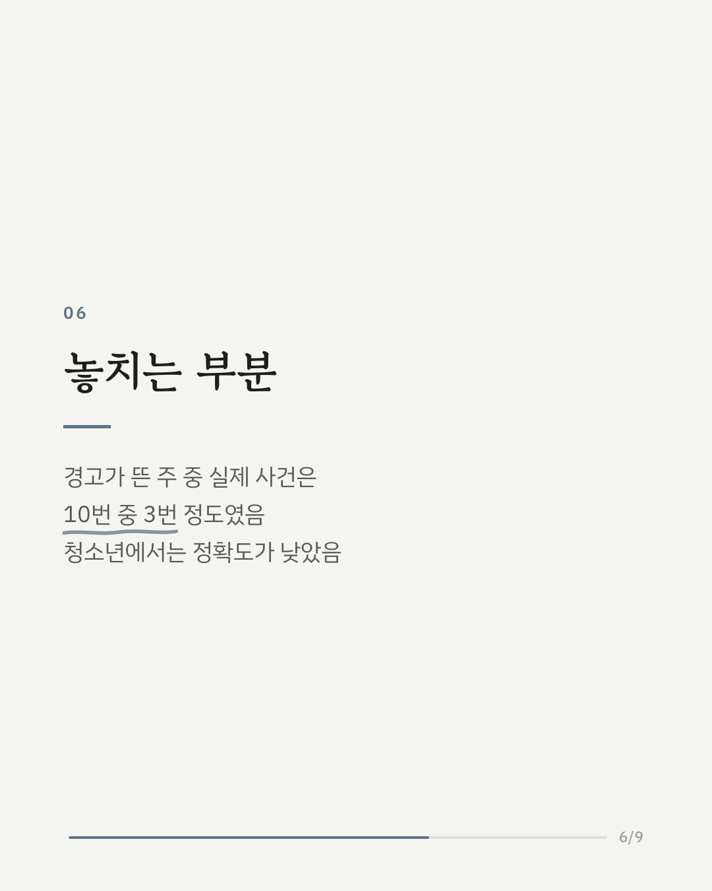
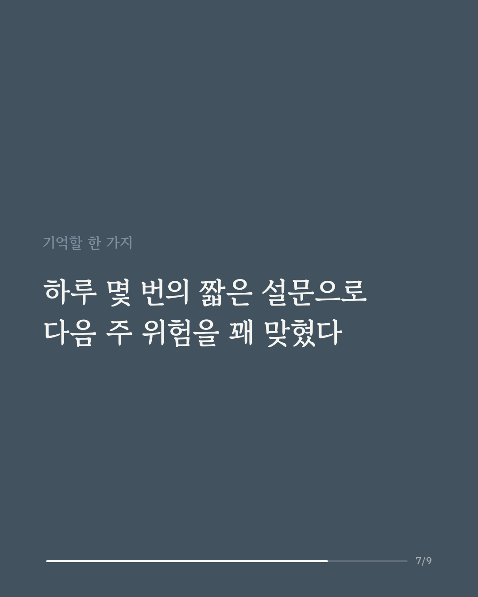
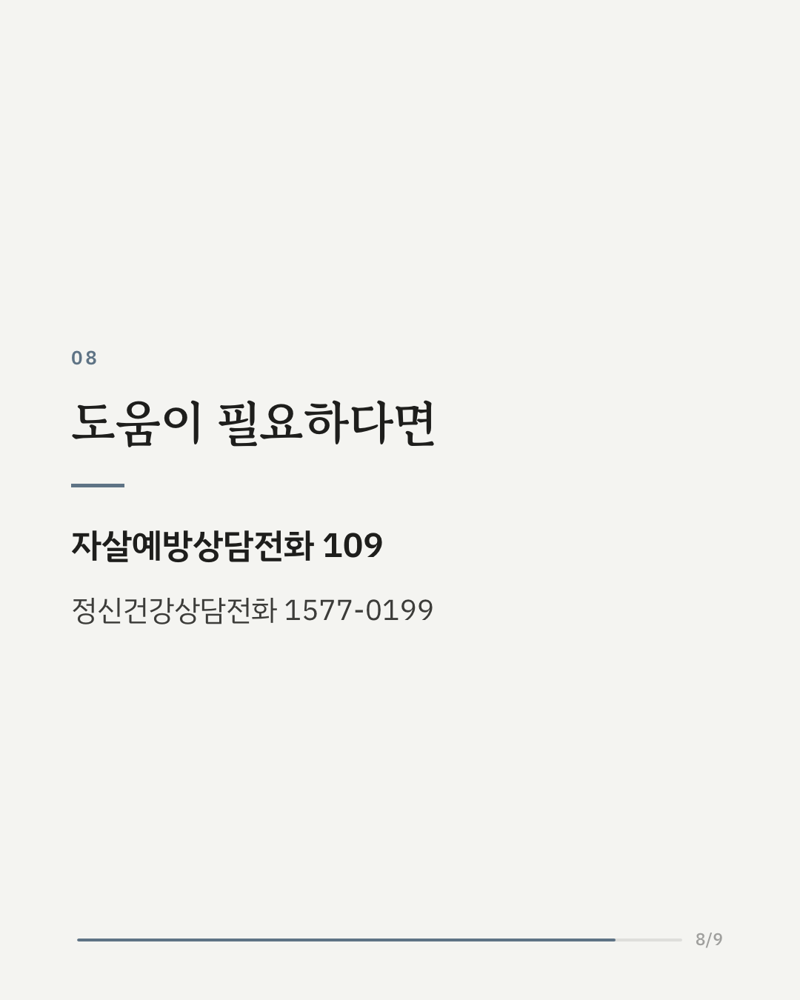
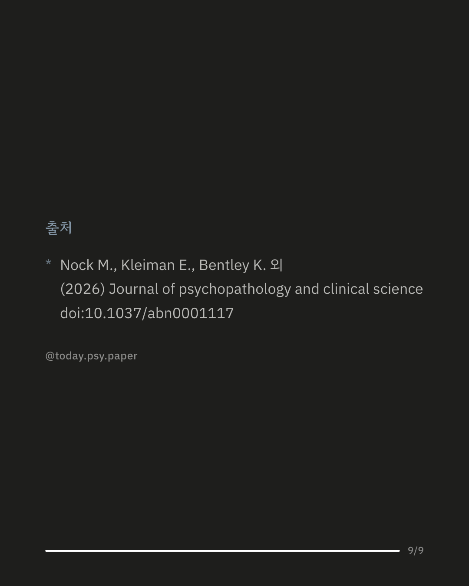

자살 예방에서 가장 어려운 일 중 하나는 위험이 가까운 시일에 커질지 미리 아는 것입니다. 이 연구는 짧은 스마트폰 설문으로 다음 주의 자살 관련 사건을 예측할 수 있는지 살펴봤습니다. 자살 생각이나 행동으로 병원을 찾은 환자 619명이 3개월 동안 하루 6번, 20문항 설문에 답했습니다. 연구진은 7만 9천여 건의 응답과 제출 간격 같은 기록을 기계 학습 모형으로 분석했습니다. 가장 좋은 모형은 자살 관련 사건(자살 행동, 또는 이를 막기 위한 입원)이 있던 주의 87%를 미리 짚어냈고, 기존 연구보다 정확했습니다. 가장 강한 신호는 연구 기간 중 이미 있었던 자살 관련 사건이었고, 스스로 답한 초조함도 위험 증가와 관련이 있었습니다. 반대로 충동을 참을 수 있다고 느낄 때는 위험이 낮았습니다. 다만 경고가 뜬 주 가운데 실제 사건으로 이어진 경우는 30% 정도였고, 청소년에서는 정확도가 더 낮았습니다. 출처: Journal of Psychopathology and Clinical Science (2026), 'Using smartphone surveys to predict next-week suicide attempts' DOI: 10.1037/abn0001117 힘든 마음이 들 때는 자살예방상담전화 109, 정신건강상담전화 1577-0199에서 도움을 받을 수 있습니다. #임상심리 #정신건강정보 #심리학연구 #논문리뷰 #자살예방 #생명존중 #디지털헬스 #기계학습
python3 publish.py 42149475